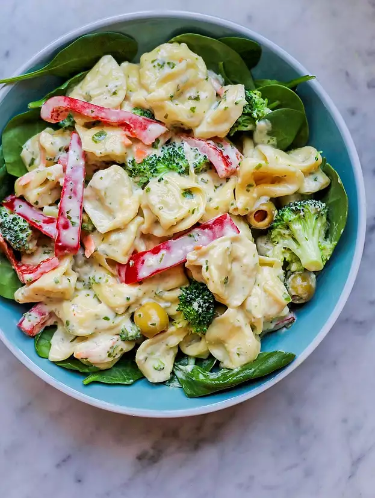

Tortellini Pesto Salad

Description
A dish inferior to Spaghetti Bolognese.
Ingredients
- 255g packaged cheese tortellini
- 1 small red bell pepper
- 0.75 cups broccoli
- 0.33 cups shredded carrots
- 0.33 cups pitted green olives
- 1 clove of garlic
- 0.5 cups mayonnaise
- 0.25 cups basil pesto
- 0.25 cups milk
- 2 tbsp Parmesan cheese
- 1 tbsp olive oil
- 1 tbsp white vinegar
- 1 bunch spinach leaves
Steps
- Bring a large pot of lightly salted water to a boil.
Place tortellini in the pot, and cook for 7 to 8 minutes,
until al dente. Drain, and cool.
- In a large bowl, mix the cooked tortellini, red bell pepper,
broccoli, carrots, olives, and garlic.
- In a separate bowl, stir together the mayonnaise, pesto, milk,
Parmesan cheese, olive oil, and vinegar. Pour over the tortellini
and vegetables, and gently toss to coat. Cover, and place in the
fridge 1 hour, until chilled. Serve over spinach leaves.